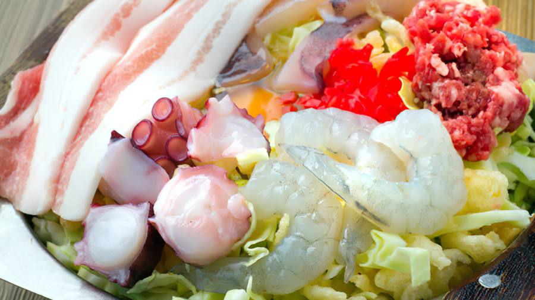
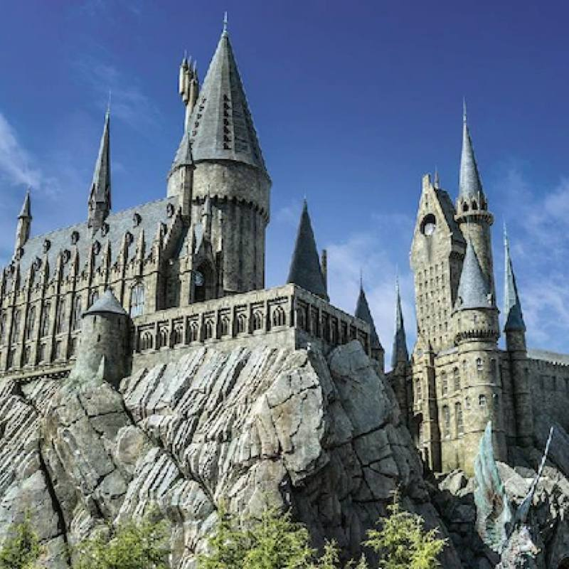
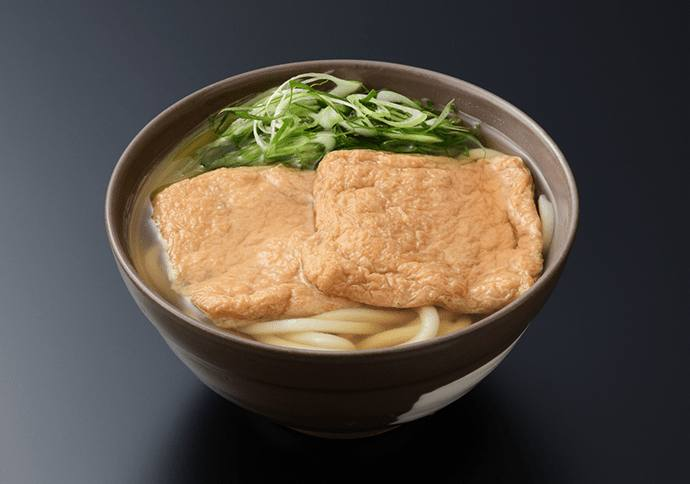

2027. 1. 13 수 — 1. 17 일
날짜를 누르면 그날 일정으로 갑니다. 시각은 계획이라 그날 상황에 따라 바뀔 수 있어요.
예약 필수 표시가 있는 곳은 미리 예약해야 들어갈 수 있어요.
1월 13일 수
도착 시각에 맞춰 만나서 시작합니다. 한 노선(사카이스지선)으로 남쪽에서 북쪽으로 올라갔다 내려옵니다. 다음 날이 USJ라 저녁은 일찍 마칩니다.

알아둘 것아지노야와 타코야키 가게는 카드가 안 됩니다. 엔화 현금을 준비하세요.
날씨·컨디션이 안 좋으면늦게 도착하면 상점가 구경은 빼고 초밥 저녁만 갑니다. 상점가는 지붕이 있어 비가 와도 걸을 수 있습니다.
1월 14일 목
하루 종일 USJ입니다. 개장 1시간 전쯤 도착하는 게 목표입니다.

알아둘 것한 번 나가면 다시 들어갈 수 없어서 식사는 모두 파크 안에서 합니다. 출발 전에 USJ 공식 앱을 깔고 로그인해 두세요.
날씨·컨디션이 안 좋으면정리권을 못 받으면 다른 구역 위주로 돕니다. 비나 추위가 심하면 실내 쇼와 긴 식사 휴식을 넣습니다.
1월 15일 금
USJ 다음 날이라 늦게 나갑니다. 옛 오사카 거리, 오사카성, 우메다 전망대 노을까지 보고 저녁은 야키니쿠입니다.

알아둘 것많이 걷는 날입니다. 편한 신발을 신으세요. 마즈라는 현금만 받습니다.
날씨·컨디션이 안 좋으면피곤하면 전망대, 그다음 신세카이 순으로 뺍니다. 오사카성은 꼭 갑니다. 비가 오면 천수각 안과 우메다 실내 위주로 다닙니다.
1월 16일 토
아침 일찍 출발해 조용할 때 절과 정원을 보고, 점심 전까지는 쉬엄쉬엄 다닙니다. 교토식 점심 뒤 기온을 걸어 내려오고, 교토역 라멘을 먹고 돌아와 도톤보리 야경을 봅니다.
알아둘 것丹은 하루 반(36시간) 전부터 취소하면 전액을 냅니다. 교토는 오사카보다 아침이 1~2℃ 더 춥고, 절에서 신발을 벗는 곳이 있어 두꺼운 양말이 좋습니다.
날씨·컨디션이 안 좋으면춥거나 피곤하면 교토역 근처 정원(쇼세이엔)만 보고 라멘 먹고 일찍 돌아옵니다.
1월 17일 일
오전에 체크아웃하고 공항으로 갑니다.
알아둘 것일본에서 면세로 산 물건은 짐을 부치기 전에 공항 키오스크에서 확인을 받아야 합니다.
날씨·컨디션이 안 좋으면날씨로 전철이 멈추면 공항 리무진 버스를 확인합니다.
| 1월 평년 기온 | 오사카 | 교토 |
|---|---|---|
| 낮 최고 | 9.7℃ | 9.1℃ |
| 아침 최저 | 3.0℃ | 1.5℃ |
만든 사람 박상훈
자료 기준일 2026년 10월. 영업시간·가격은 바뀔 수 있어 예약 전에 다시 확인합니다. 기온은 일본 기상청 평년값입니다. 사진은 각 가게·시설의 공식 사진이며 캡션의 출처에서 원문을 볼 수 있습니다.